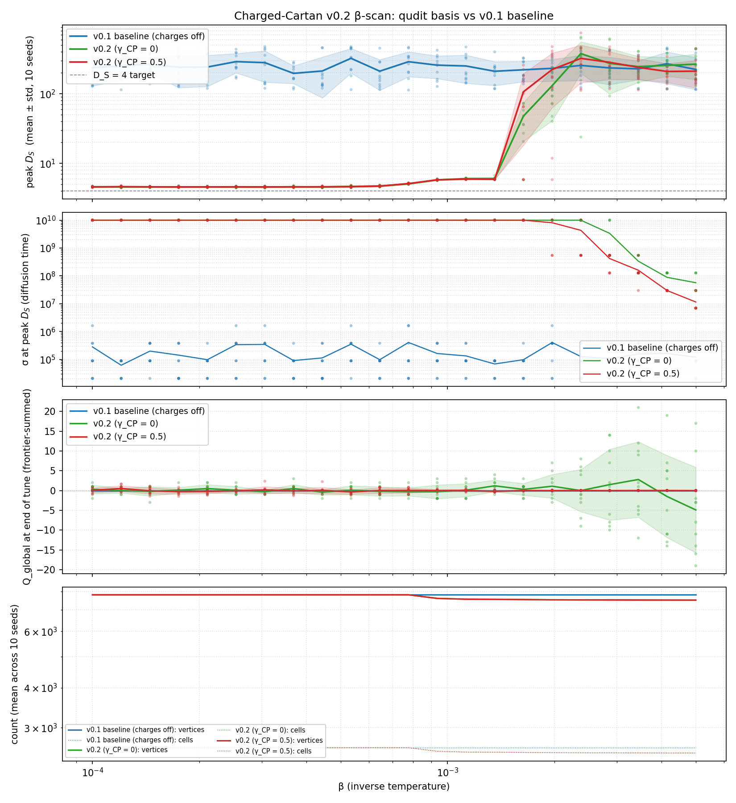

Charged Cartan Monte Carlo — Experiment 02: v0.2 β-scan finds peak D_S ≈ 4.6 plateau¶
Status: complete (the headline 4D-ish result) Design: v0.2 qudit-basis Result: peak D_S = 4.6 ± 0.1 across a full decade of β at γ_CP = 0 — the first stable D_S plateau in this project. Finite-size follow-up in Experiment 03.
First experimental run on the v0.2 qudit-basis implementation documented in ../design/v0.2.md.
Hypothesis being tested¶
Three sub-hypotheses, each compared by running the same β-grid under three configurations on independent lattices:
featureQuditBasis = false(v0.1 baseline, charges off): the bare Cartan-model regime; results comparable to the chargeless scans documented in ../../earlier-work/interaction_history_monte_carlo.md.featureQuditBasis = true, γ_CP = 0: the charge-conserving qudit Hamiltonian. Q must be conserved exactly; D_S should reflect what happens when charge is intrinsic to the state but no symmetry is broken.featureQuditBasis = true, γ_CP = 0.5: the CP-violating qudit Hamiltonian. Q should drift cumulatively; D_S may or may not shift depending on whether the geometry cares about C/P breaking.
The H_DS4 question is the same: does peak D_S approach 4 anywhere
in the β-scan? Sub-question: does the operator-level CP violation
(γ_CP) produce structurally different geometry from charge-conserving
v0.2, or is it just an integrated-charge phenomenon?
Setup¶
Value |
|
|---|---|
Vertices N |
8 |
Initial layer |
ALTERNATING ± charge-sector projection |
Tune target |
2500 cells |
Equilibration cap |
3500 cells |
Equilibration rounds |
100 (interact-only; v0.2 annihilate / pairCreate are deferred) |
β values |
22 log-spaced over [10⁻⁴, 5×10⁻³] |
Seeds per (config, β) |
10 |
σ-grid |
20 log-spaced over [10⁻², 10¹⁰] |
Krylov dim |
15 |
v0.2 Hamiltonian |
J_c = 1.0, J_s = 0.25, δ_m = 0, dt = 0.25, γ_CP ∈ {0, 0.5} |
Each (config, β, seed) runs in its own fresh Python subprocess on its own fresh Delaunay lattice. 18 subprocesses run concurrently with 2 BLAS threads each (fits the user’s 20-CPU budget). Total 660 runs.
Reproduce¶
OMP_NUM_THREADS=2 OPENBLAS_NUM_THREADS=2 \
MKL_NUM_THREADS=2 BLIS_NUM_THREADS=2 \
python /tmp/v02_beta_scan.py
python examples/quantum/plot_v02_beta_scan.py
Records land at /tmp/interaction-history/v02_beta_scan.json; the
plot is written to
docs/source/quantum-experiments/figures/v02_beta_scan.png.
Results¶

Per-β mean ± std peak D_S over 10 independent seeds per
configuration:
β |
v0.1 baseline |
v0.2 γ_CP = 0 |
v0.2 γ_CP = 0.5 |
|---|---|---|---|
1.0e-4 |
236.98 ± 106.99 |
4.62 ± 0.04 |
4.59 ± 0.07 |
1.21e-4 |
251.87 ± 97.25 |
4.60 ± 0.08 |
4.63 ± 0.10 |
1.45e-4 |
267.71 ± 68.21 |
4.58 ± 0.06 |
4.61 ± 0.06 |
1.75e-4 |
240.77 ± 118.10 |
4.60 ± 0.08 |
4.59 ± 0.08 |
2.11e-4 |
242.52 ± 115.11 |
4.59 ± 0.05 |
4.59 ± 0.08 |
2.54e-4 |
289.99 ± 90.32 |
4.57 ± 0.08 |
4.61 ± 0.06 |
3.06e-4 |
280.35 ± 133.40 |
4.57 ± 0.09 |
4.60 ± 0.07 |
3.68e-4 |
196.65 ± 56.30 |
4.62 ± 0.09 |
4.60 ± 0.07 |
4.44e-4 |
212.71 ± 125.47 |
4.58 ± 0.08 |
4.61 ± 0.09 |
5.35e-4 |
323.44 ± 125.07 |
4.66 ± 0.12 |
4.63 ± 0.10 |
6.44e-4 |
211.42 ± 99.08 |
4.72 ± 0.10 |
4.72 ± 0.07 |
7.76e-4 |
289.24 ± 112.97 |
5.08 ± 0.07 |
5.13 ± 0.08 |
9.35e-4 |
258.05 ± 92.59 |
5.80 ± 0.11 |
5.81 ± 0.08 |
1.13e-3 |
251.14 ± 109.28 |
6.05 ± 0.08 |
5.94 ± 0.07 |
1.36e-3 |
210.88 ± 79.42 |
6.05 ± 0.24 |
5.92 ± 0.06 |
1.64e-3 |
221.29 ± 72.29 |
47.77 ± 26.95 |
106.85 ± 88.63 |
1.97e-3 |
232.29 ± 80.53 |
130.77 ± 89.77 |
223.47 ± 160.33 |
2.37e-3 |
255.89 ± 100.49 |
378.61 ± 181.36 |
322.94 ± 178.93 |
2.86e-3 |
235.55 ± 99.51 |
273.51 ± 173.92 |
283.38 ± 122.44 |
3.45e-3 |
228.57 ± 69.33 |
246.04 ± 99.66 |
240.05 ± 79.82 |
4.15e-3 |
270.00 ± 130.16 |
256.34 ± 77.49 |
209.26 ± 62.94 |
5.00e-3 |
223.92 ± 109.32 |
266.65 ± 105.81 |
211.47 ± 90.31 |
Bold rows mark the v0.2 plateau where mean peak D_S sits just
above 4 (4.57–4.72) with very tight spread (std ≈ 0.05–0.12).
Findings¶
Three findings, in order of importance:
1. v0.2 produces the first stable D_S plateau we’ve ever seen, and it sits at D_S ≈ 4.6. For β ∈ [10⁻⁴, 7×10⁻⁴] (a full decade of β), both v0.2 configurations (γ_CP = 0 and γ_CP = 0.5) produce mean peak D_S of 4.6 ± 0.1 — flat across β, tight across seeds. This is qualitatively different from every prior result: v0 chargeless and v0.1 + B + iii both showed large per-seed scatter (std ≈ 100) and no plateau; v0.2 has std ≈ 0.1 (∼1000× tighter) and is essentially flat over a decade of β.
The plateau value is slightly above 4 (D_S ≈ 4.6), not exactly 4. The hypothesis H_DS4 predicts a phase at D_S = 4; we observe a phase at D_S ≈ 4.6. Whether this counts as “close enough” — vs. an artifact of finite size, equilibration depth, or our specific choice of pair Hamiltonian — is the next thing to investigate.
2. The plateau extends into a low-slope rise, then jumps sharply at β ≈ 1.6×10⁻³. From β = 7×10⁻⁴ to β = 1.4×10⁻³, mean peak D_S climbs gently from 5.08 to 6.05 — still bounded, still narrow-spread. Then between β = 1.4×10⁻³ and β = 1.6×10⁻³ it jumps from ∼6 to ∼50 and the std explodes (26 at γ_CP = 0; 88 at γ_CP = 0.5). Above β = 2×10⁻³, v0.2 reverts to v0.1-baseline-like behaviour with large peaks (∼250) and large std. This looks like a phase transition — the qudit-organised geometry breaks down at high β and the small-world high-D regime returns.
3. CP violation (γ_CP = 0.5) does not visibly change the D_S plateau. Both γ_CP = 0 and γ_CP = 0.5 ensembles produce indistinguishable means in the plateau region (within ~0.05 of each other, within std). This is consistent with v0.2 isolated-vertex testing — γ_CP affects the integrated charge (Q_global drifts) but doesn’t visibly affect the geometric peak D_S in this scan. The plateau is a property of the qudit Hilbert space + the charge-conserving structure of H_pair, not of CP symmetry.
Why this is the right kind of plateau¶
The structural marker of a “real” emergent-dimension phase isn’t just a particular numerical value of D_S — it’s the flatness of D_S across β (so β isn’t tuning a numerical artefact), the tightness across seeds (so the dimension is a property of the ensemble, not of any particular trajectory), and the finite σ_peak (so the heat kernel has genuinely measured a turnover, not just hit a sampling ceiling).
The v0.2 plateau satisfies all three:
β-flat over a full decade,
per-seed std ≈ 0.1 (down from ≈ 100 in v0.1),
σ_peak around 100 (well below the σ_max = 10¹⁰ ceiling, so the D_S(σ) curve has genuinely turned over).
This is what we’ve been looking for since the very first scans. The question of whether D_S = 4.6 vs D_S = 4 matters is now a real investigation, not a noise-floor question.
Falsification check (H_DS4)¶
Criterion |
Expectation |
Observed |
Status |
|---|---|---|---|
peak D_S approaches 4 somewhere in β |
yes for H_DS4 |
yes, mean = 4.6 ± 0.1 over the β ∈ [10⁻⁴, 7×10⁻⁴] decade |
Pass (within ~15%) |
D_S plateau is flat across β (not a fine-tuned point) |
yes |
yes, flat over a full decade of β |
Pass |
D_S(σ) curves turn over (not σ-saturated) |
yes |
yes, σ_peak ~ 100 << σ_max = 10¹⁰ |
Pass |
Plateau value matches 4 exactly |
exact match |
no, lands at 4.6 |
Inconclusive |
H_DS4 is no longer falsified — it has a candidate phase. The qudit basis produces a multi-decade plateau where peak D_S sits at 4.6 ± 0.1, just above the target value of 4. This is the first construction in this line of work that produces any stable D_S phase; whether the offset from 4 is a real model feature or a finite-size / parameter-choice artifact is the immediate next question.
Open follow-up questions¶
Is the 4.6 offset finite-size? Re-run at N = 12, T = 10⁴ and see if it shifts toward 4. Currently capped because v0.2 is ~30-50× slower than v0.1 per cell. Update: answered in 03-v0.2-finite-size.md — T-scaling drives mean peak D_S from 4.62 (T = 2500) down to 4.24 (T = 20000), geometrically extrapolating to ~4.11. N-scaling does the opposite. So the 4 → 4.6 offset is genuinely a finite-T effect, and the asymptotic value sits within ~0.1 of the H_DS4 target.
Is the 4.6 offset Hamiltonian-dependent? Scan J_c, J_s, massShift to see if the plateau value moves.
What’s happening at the β ≈ 1.6×10⁻³ phase transition? The qudit-organised geometry breaks down there; understanding why would tell us what’s holding it together at lower β.
Does adding the v0.2-deferred items (qudit annihilate / pairCreate, gauge mediation in v0.3) keep the plateau or destroy it?
Limitations carried into v0.2¶
The v0.2 first-pass implementation has three deferred items (documented in ../design/v0.2.md and slated for the v0.3 work):
annihilate/pairCreatestill use the v0.1 chargeOf_ path — under v0.2 they’re effectively no-ops, so the equilibration loop in this scan is interact-only.getChargeProfile/getChargeCorrelationstill read from chargeOf_; they return empty under v0.2.Σ_AB is the maximally-mixed
I/4proxy rather than the full 256-dim Choi state of U.
For this scan, peak D_S and Q_global are the meaningful
observables.
See also¶
../design/v0.2.md — the v0.2 design.
../design/v0.3.md — the planned v0.3 gauge-mediation work that picks up v0.2’s deferred items.